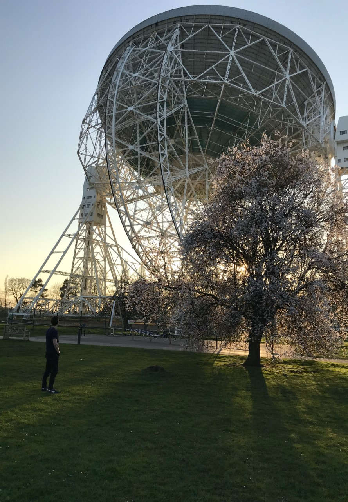

I am currently a 3rd year PhD student at the University of Leeds (UK), due to submit my thesis in April 2023. My thesis is titled '3D whole-atmosphere modelling of rocky exoplanet systems and synthetic telescope observations'. I acheieved my MPhys in Physics from The University of Manchester (UK), where I studied between 2015 and 2019. Here, I completed two MPhys research projects, one on defining metrics for planetary habitability, and the other on designing a galactic survey to locate the most habitable planets which are mutually detectable with Earth.
I am interested in a variety of topics related to planetary and exoplanetary science. Currently, my research focusses on atmospheric simulations, where I investaigate the connection between stars, chemistry, dynamics and climate. To do this, I use various models from the CESM2 framework, in particular WACCM, but also CAM and WACCM-X. From these simulations, I use various tools to compute synethtic exoplanet spectra and this predict future observations.
In the future, I would like to continue my modelling work, whilst also investigating exoplanetary systems through observations (yes, I will be applying for postdocs!).
Outside of astrophysics, I have an academic interest in pretty much every subject - every time I had to make a decision to pick subjects to study and say goodbye to other ones in school, college or university, I always found it frustrating that I couldn't learn everyhting. With the interdisciplinary nature of my work, I hope to claw my way back into the multitude of intriguing subjects out there.
